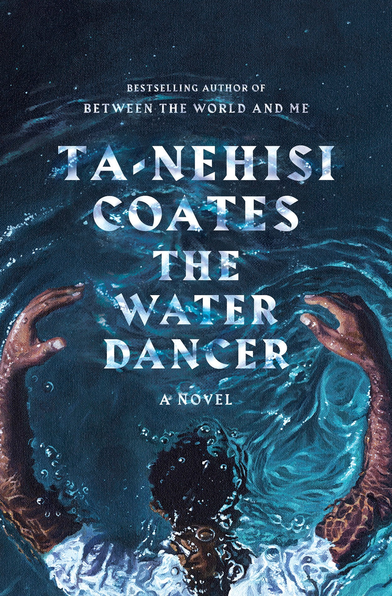

"The Water Dancer"
- Read on 2019-11-20
- Rating: ️️️️️
- Format: 🎧 (14 hours 14 minutes)
I want to give this 3.5 stars. I knew nothing about this book going in, so I had no clue what to expect. It was interesting, and enjoyable. The book follows Hiram, a boy born to "the task" (see: slavery). An acknowledged son of his master, he yearns for a life of freedom - not only for him, but for those around him. Through a talent gifted to him through blood, though not understood, he pursues that freedom.
I wanted to understand more of the main character's impatience and motives, and felt like the arguments against him weren't sufficiently explained. Additionally, I wouldn't be surprised if there is some deeper symbolism to the book's story, events, and lessons.
- Prior: The Girl with Seven Names
- Next: The Three-Body Problem